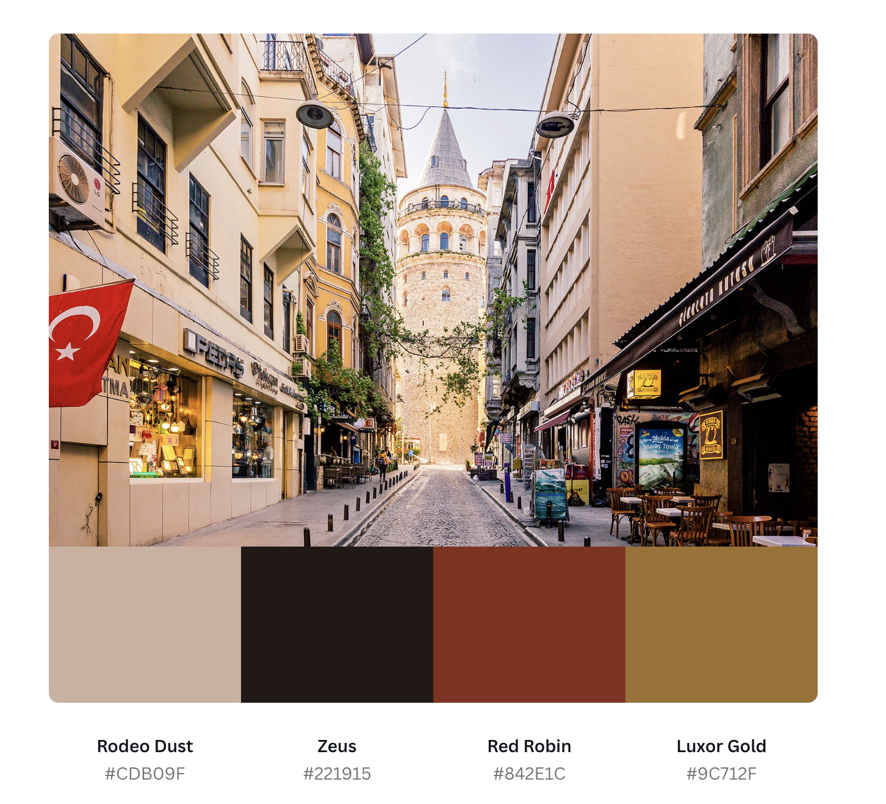
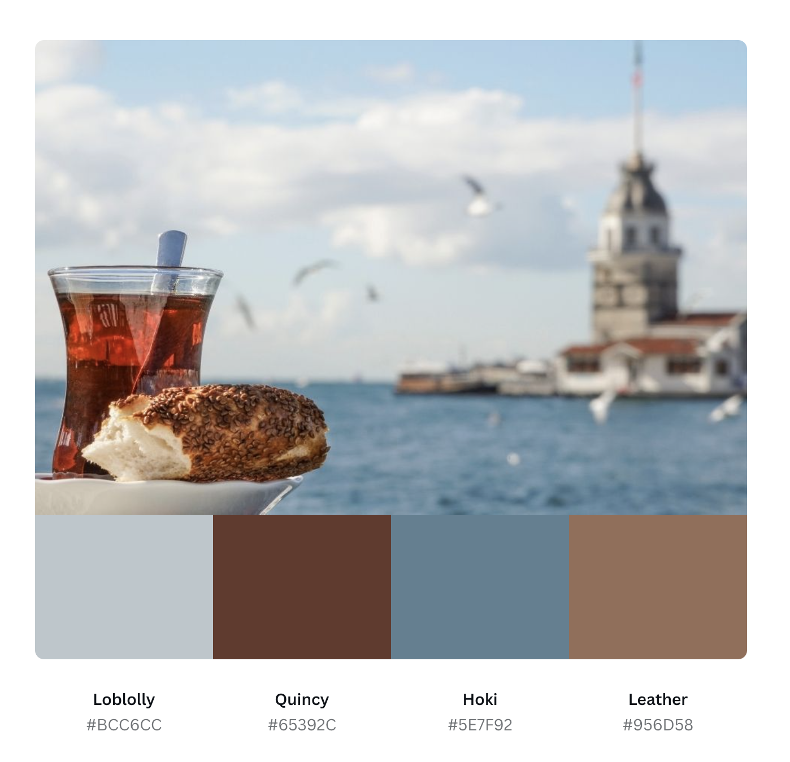

My website will be a digital display of travel reccommendations in Istanbul, Turkey. I visit Istanbul nearly every summer, as it is the city my grandparents live in and where my parents are from. At the moment, I am planning on focusing on food, stay, and tour reccommendations in Istanbul, but time permitting, I'd like to include other cities in Turkey as well.
I intend to develop this website for anyone that is interested in traveling to Istanbul, Turkey, which includes several of my friends. For those that are interested, but don't know where to start to make this trip a reality, my website will provide all details necessary to inspire and execute travel plans.
Istanbul is a city with cobblestone streets and beautiful architectural structures from the time of the Byzantine and Ottoman Empires. I wanted to generate a color palette that encompassed the rich, warm tones found when walking around the city. I want the design to be easy on the eyes, with soft, warm colors that reflect the welcoming, warm attitude of the city's inhabitants. Istanbul is also known for being the only transcontiental city in the world, as it bridges Asia and Europe with the Bosphorous Strait. I am thinking about adding tones of blue to allude to the blue strait's beauty. I have two preliminary palettes that I am interested in using, which I generated from photos of Istanbul. I can use a combination of these palettes in my final design.
 I was inspired by these websites for my design:
I am planning on having separate pages describing Istanbul's history, food reccommendations, as well as musuems/sightseeing, and hotels to stay in. This totals to 4 pages of content + a home/about page= 5 pages. The home page will have a navbar for the history, food, explore, and stay tabs. I may adjust the number of pages depending on whether I want to extend the website by providing more options to external sites or links.